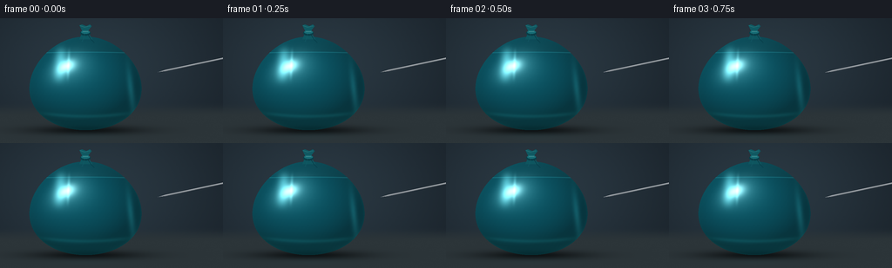
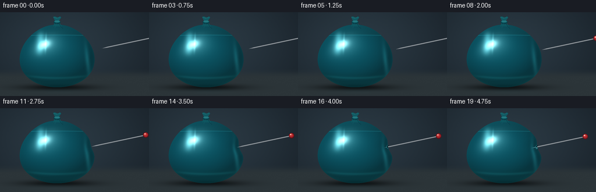
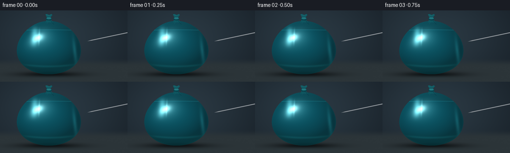
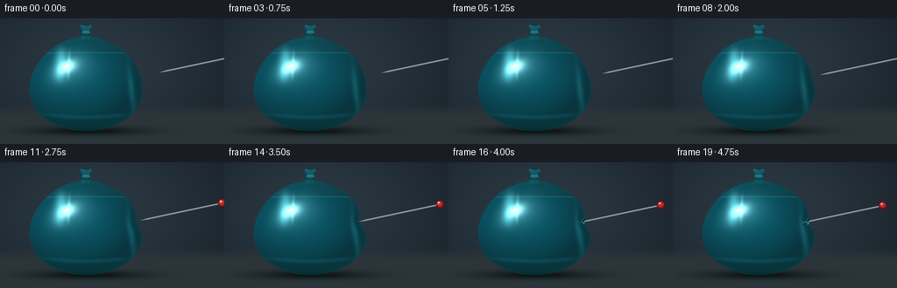

CODING AGENTS AS PIXEL WORLD MODELS
traex/GPT-6.1-Sol · phygen_024
点击播放 · 原生 RGB 像素
逐轮保存的候选
回放视频、检查图与代码变化。
每份候选均可单独播放。实际图片检查记录在下方工具轨迹中。
候选 01播放与检查图
点击播放 · 原生 RGB 像素


展开代码变化
--- 上一保存版本
+++ 本次保存版本
@@ -0,0 +1,199 @@
+"""Procedural macro shot: a steel pin slowly punctures a water-filled latex balloon."""
+from pathlib import Path
+import json
+import numpy as np
+from PIL import Image, ImageDraw, ImageFilter
+import artifact_io
+
+ROOT=Path(__file__).resolve().parent
+SPEC=json.loads((ROOT/'task_spec.json').read_text())
+W,H=SPEC['width'],SPEC['height']
+S=3
+WW,HH=W*S,H*S
+Y,X=np.mgrid[0:HH,0:WW].astype(float)/S
+rng=np.random.default_rng(32)
+noise=rng.normal(0,0.30,(HH,WW))
+
+def smooth(a,b,t):
+ u=np.clip((t-a)/(b-a),0,1)
+ return u*u*(3-2*u)
+
+def overlay(base, draw_fn, blur=0):
+ layer=Image.new('RGBA',(WW,HH))
+ draw_fn(ImageDraw.Draw(layer))
+ if blur: layer=layer.filter(ImageFilter.GaussianBlur(blur*S))
+ return Image.alpha_composite(base.convert('RGBA'),layer)
+
+def line(draw,pts,fill,width=1):
+ draw.line([(int(x*S),int(y*S)) for x,y in pts], fill=fill,width=max(1,int(width*S)))
+
+def ellipse(draw,bb,fill,outline=None,width=1):
+ draw.ellipse(tuple(int(v*S) for v in bb),fill=fill,outline=outline,width=max(1,int(width*S)))
+
+def make_background():
+ # Uncluttered cool photographic backdrop and a matte tabletop.
+ v=np.exp(-((X-107)/170)**2-((Y-54)/115)**2)
+ bg=np.zeros((HH,WW,3))
+ bg[:]=[20,27,34]
+ bg+=v[...,None]*np.array([22,29,32])
+ floor=smooth(96,113,Y)
+ bg=bg*(1-floor[...,None])+np.array([44,53,57])*floor[...,None]
+ bg+=noise[...,None]
+ shadow=np.exp(-((X-100)/61)**2-((Y-129)/5.0)**2)
+ bg*=1-0.66*shadow[...,None]
+ reflection=np.exp(-((X-101)/40)**2-((Y-135)/5.2)**2)
+ bg+=reflection[...,None]*np.array([0,4,4])
+ return np.clip(bg,0,255)
+BG=make_background()
+
+def needle(im, tip, end, inside=False, visible_start=None):
+ # Analytical cylindrical metal shaft with a real tapered point.
+ tx,ty=tip; ex,ey=end
+ if visible_start is not None:
+ tx,ty=visible_start
+ vx,vy=ex-tx,ey-ty
+ length=np.hypot(vx,vy); ux,uy=vx/length,vy/length
+ nx,ny=-uy,ux
+ q=(X-tx)*ux+(Y-ty)*uy
+ r=(X-tx)*nx+(Y-ty)*ny
+ half=0.93*np.minimum(1,np.maximum(q,0)/9.0) if visible_start is None else np.full(X.shape,.93)
+ cover=(q>=0)&(q<=length)&(np.abs(r)<=half)
+ across=np.clip(r/(half+1e-5),-1,1)
+ lit=0.20+0.55*np.exp(-((across+.28)/.35)**2)+0.23*np.exp(-((across-.75)/.16)**2)
+ col=np.stack([58+187*lit,65+185*lit,72+181*lit],axis=-1)
+ if inside:
+ col=col*.37+np.array([8,69,77])
+ a=np.array(im.convert('RGB')).astype(float)
+ a[cover]=col[cover]
+ result=Image.fromarray(np.uint8(np.clip(a,0,255))).convert('RGBA')
+ if not inside:
+ # A small lacquered red pin head, usually cropped until late in the shot.
+ def head(d):
+ ellipse(d,(ex-4.6,ey-4.6,ex+4.6,ey+4.6),(85,15,21,255))
+ ellipse(d,(ex-4.1,ey-4.1,ex+3.7,ey+3.5),(154,31,38,255))
+ ellipse(d,(ex-3.2,ey-3.4,ex+2.0,ey+1.5),(193,52,52,255))
+ ellipse(d,(ex-2.4,ey-2.8,ex-.3,ey-.9),(255,204,185,245))
+ result=overlay(result,head)
+ return result
+
+
+def frame(i):
+ t=i/(SPEC['frames']-1)
+ travel=36*(0.14*t+0.86*smooth(0,1,t))
+ tip=np.array([181.,62.])+travel*np.array([-.978,.208])
+ end=tip+np.array([94.,-20.])
+ # First comes elastic deformation, then the point passes through the dimple.
+ press=smooth(.28,.75,t)
+ depth=9.6*press
+ puncture=smooth(.77,.94,t)
+ depth-=1.3*puncture
+ py=65.5+2.0*press
+ cx,cy,rx,ry,rz=98.,75.,64.,54.,45.
+ dy=(Y-cy)/ry
+ pear=1+.115*dy
+ rxx=rx*pear
+ dx=X-cx
+ weight=np.clip(dx/rxx,0,1)**5
+ g=np.exp(-.5*((Y-py)/7.4)**2)
+ mapped=dx+depth*g*weight
+ u=mapped/rxx
+ q=1-u*u-dy*dy
+ mask=q>0
+ z=rz*np.sqrt(np.maximum(q,0))
+ # Normals of the indented latex skin, not a flat painted circle.
+ gy,gx=np.gradient(z,1/S,1/S)
+ nx=-gx; ny=-gy; nz=np.ones_like(nx)
+ norm=np.sqrt(nx*nx+ny*ny+nz*nz)
+ nx/=norm;ny/=norm;nz/=norm
+ light=np.array([-.48,-.61,.63]); light/=np.linalg.norm(light)
+ nd=np.maximum(nx*light[0]+ny*light[1]+nz*light[2],0)
+ half=light+np.array([0,0,1]);half/=np.linalg.norm(half)
+ nh=np.maximum(nx*half[0]+ny*half[1]+nz*half[2],0)
+ thickness=z/rz
+ fres=(1-nz)**2
+ # Latex is transparent enough to reveal the water, but not glass-like.
+ water=smooth(37,40,Y)
+ transmission=.30+.23*(1-thickness)
+ transmitted=BG.copy()
+ transmitted[...,0]*=.27
+ transmitted[...,1]*=.85
+ transmitted[...,2]*=.87
+ latex=np.zeros_like(BG)
+ latex[:]=[9,88,105]
+ latex*= (.44+.57*nd+.09*thickness)[...,None]
+ latex+=np.array([3,21,23])*(thickness*water)[...,None]
+ color=latex*(1-transmission[...,None])+transmitted*transmission[...,None]
+ color+=np.array([3,23,24])*fres[...,None]
+ color+=np.array([208,237,231])*(.25*nh**21+.75*nh**130)[...,None]
+ # Broad curved softbox reflections conform to the front of the inflated skin.
+ refl=np.exp(-((u+.48)/.105)**2-((dy+.40)/.34)**4)
+ color+=refl[...,None]*np.array([54,83,83])
+ refl2=np.exp(-((u+.32)/.027)**2-((dy+.40)/.29)**4)
+ color+=refl2[...,None]*np.array([37,51,50])
+ edge=np.exp(-((u-.80)/.055)**2-((dy-.13)/.47)**2)
+ color+=edge[...,None]*np.array([10,33,34])
+ # A small top air pocket and meniscus make the liquid fill legible.
+ meniscus=np.exp(-((Y-(39+1.1*u*u))/.48)**2)*(1-smooth(.86,1,abs(u)))
+ color+=meniscus[...,None]*np.array([13,32,32])
+ air=(1-water)*thickness
+ color+=air[...,None]*np.array([8,6,3])
+ # Faint refracted pool caustic near the bottom; slight latex mottling.
+ caustic=np.exp(-((Y-(113-7*u*u))/2.1)**2)*np.exp(-(u/.71)**6)
+ color+=caustic[...,None]*np.array([4,17,17])
+ texture=.55*np.sin(X*1.31+Y*.83)+.32*np.sin(Y*2.1-X*.24)
+ color+=texture[...,None]*.34
+ image=BG.copy();image[mask]=np.clip(color[mask],0,255)
+ im=Image.fromarray(image.astype(np.uint8)).convert('RGBA')
+ # Tied-off latex neck and softly folded knot on the top of the balloon.
+ def neck(d):
+ d.polygon([(91*S,24*S),(94*S,17*S),(94*S,13*S),(101*S,13*S),(102*S,18*S),(106*S,24*S)],fill=(14,85,95,255))
+ ellipse(d,(92.0,14.0,103.8,20.2),(8,63,73,255))
+ ellipse(d,(93,14,103,17.8),(24,110,119,255))
+ line(d,[(95,15),(101,15.1)],(76,155,156,220),.8)
+ d.polygon([(94*S,14*S),(91*S,8*S),(94*S,7*S),(99*S,9*S),(103*S,7*S),(105*S,9*S),(101*S,14*S)],fill=(16,89,98,255))
+ line(d,[(92,8.4),(97,10),(103,8.7)],(51,126,131,240),.9)
+ line(d,[(97,18),(96,23),(94,27)],(24,113,121,145),.65)
+ line(d,[(101,19),(104,24),(108,28)],(2,50,62,125),.7)
+ im=overlay(im,neck)
+ # Locate the membrane along the steel pin axis (including the indentation).
+ ss=np.linspace(0,30,1201)
+ px=tip[0]+ss*.978; yy=tip[1]-ss*.208
+ dd=(yy-cy)/ry; rr=rx*(1+.115*dd)
+ ww=np.clip((px-cx)/rr,0,1)**5
+ qq=1-((px-cx+depth*np.exp(-.5*((yy-py)/7.4)**2)*ww)/rr)**2-dd*dd
+ inside=np.flatnonzero(qq>0)
+ contact=None
+ if len(inside):
+ last=inside[-1]
+ contact=np.array([px[last],yy[last]])
+ if puncture>0 and contact is not None and qq[0]>0:
+ # The submerged tip is just visible through the taut colored membrane.
+ im=needle(im,tip,end,inside=True)
+ # Re-cover all of the external shaft through the ordinary silver pass.
+ def cavity(d):
+ ex,ey=contact
+ ellipse(d,(ex-1.9,ey-2.25,ex+1.9,ey+2.2),(3,35,43,240))
+ d.arc(((ex-2.4)*S,(ey-2.9)*S,(ex+2.2)*S,(ey+2.7)*S),70,258,fill=(35,137,143,230),width=2)
+ im=overlay(im,cavity)
+ im=needle(im,tip,end,visible_start=contact)
+ if puncture>.2:
+ # A tiny bead wets the lower lip; no unrelated explosive burst.
+ ex,ey=contact;rad=1.05+.80*puncture
+ def drop(d):
+ ellipse(d,(ex-.45-rad,ey+1.0,ex-.45+rad,ey+1+rad*2.1),(33,106,114,205))
+ ellipse(d,(ex-.9,ey+1.2,ex-.2,ey+2.1),(188,226,221,235))
+ d.arc(((ex-.45-rad)*S,(ey+1)*S,(ex-.45+rad)*S,(ey+1+rad*2.1)*S),0,130,fill=(6,46,56,245),width=2)
+ im=overlay(im,drop)
+ else:
+ im=needle(im,tip,end)
+ # Finish as an RGB, antialiased, fixed-camera macro frame.
+ im=im.convert('RGB').resize((W,H),Image.Resampling.LANCZOS)
+ return np.asarray(im,dtype=np.uint8)
+
+def main():
+ frames=np.stack([frame(i) for i in range(SPEC['frames'])])
+ artifact_io.save(frames,ROOT)
+ print('Saved',frames.shape,'RGB frames')
+
+if __name__=='__main__':
+ main()
候选 02播放与检查图
点击播放 · 原生 RGB 像素


展开代码变化
--- 上一保存版本
+++ 本次保存版本
@@ -79,16 +79,21 @@
def frame(i):
t=i/(SPEC['frames']-1)
- travel=36*(0.14*t+0.86*smooth(0,1,t))
- tip=np.array([181.,62.])+travel*np.array([-.978,.208])
+ travel=32*(0.65*t+0.35*smooth(0,1,t))
+ tip=np.array([175.,62.])+travel*np.array([-.978,.208])
end=tip+np.array([94.,-20.])
# First comes elastic deformation, then the point passes through the dimple.
- press=smooth(.28,.75,t)
- depth=9.6*press
- puncture=smooth(.77,.94,t)
- depth-=1.3*puncture
- py=65.5+2.0*press
cx,cy,rx,ry,rz=98.,75.,64.,54.,45.
+ py=min(tip[1],67.25)
+ td=(tip[1]-cy)/ry
+ tr=rx*(1+.115*td)
+ tw=np.clip((tip[0]-cx)/tr,0,1)**5
+ tg=np.exp(-.5*((tip[1]-py)/7.4)**2)
+ required_depth=max(0,(tr*np.sqrt(1-td*td)-(tip[0]-cx))/(tg*tw))
+ depth=min(required_depth,9.6)
+ press=depth/9.6
+ puncture=smooth(.81,.96,t)
+ depth-=1.1*puncture
dy=(Y-cy)/ry
pear=1+.115*dy
rxx=rx*pear
可观测工具轨迹
实际执行的命令与返回图片。
命令 1exit 0
/bin/bash -lc 'ls -la && cat prompt.txt && cat GENERATION_RULES.md && cat task_spec.json'
命令 2exit 0
/bin/bash -lc "cat artifact_io.py && python - <<'PY' import importlib.util for x in ['numpy','PIL','scipy']: print(x, bool(importlib.util.find_spec(x))) PY"
命令 3exit 0
/bin/bash -lc "cat > generate.py <<'PY'
\"\"\"Procedural macro shot: a steel pin slowly punctures a water-filled latex balloon.\"\"\"
from pathlib import Path
import json
import numpy as np
from PIL import Image, ImageDraw, ImageFilter
import artifact_io
ROOT=Path(__file__).resolve().parent
SPEC=json.loads((ROOT/'task_spec.json').read_text())
W,H=SPEC['width'],SPEC['height']
S=3
WW,HH=W*S,H*S
Y,X=np.mgrid[0:HH,0:WW].astype(float)/S
rng=np.random.default_rng(32)
noise=rng.normal(0,0.30,(HH,WW))
def smooth(a,b,t):
u=np.clip((t-a)/(b-a),0,1)
return u*u*(3-2*u)
def overlay(base, draw_fn, blur=0):
layer=Image.new('RGBA',(WW,HH))
draw_fn(ImageDraw.Draw(layer))
if blur: layer=layer.filter(ImageFilter.GaussianBlur(blur*S))
return Image.alpha_composite(base.convert('RGBA'),layer)
def line(draw,pts,fill,width=1):
draw.line([(int(x*S),int(y*S)) for x,y in pts], fill=fill,width=max(1,int(width*S)))
def ellipse(draw,bb,fill,outline=None,width=1):
draw.ellipse(tuple(int(v*S) for v in bb),fill=fill,outline=outline,width=max(1,int(width*S)))
def make_background():
# Uncluttered cool photographic backdrop and a matte tabletop.
v=np.exp(-((X-107)/170)**2-((Y-54)/115)**2)
bg=np.zeros((HH,WW,3))
bg[:]=[20,27,34]
bg+=v[...,None]*np.array([22,29,32])
floor=smooth(96,113,Y)
bg=bg*(1-floor[...,None])+np.array([44,53,57])*floor[...,None]
bg+=noise[...,None]
shadow=np.exp(-((X-100)/61)**2-((Y-129)/5.0)**2)
bg*=1-0.66*shadow[...,None]
reflection=np.exp(-((X-101)/40)**2-((Y-135)/5.2)**2)
bg+=reflection[...,None]*np.array([0,4,4])
return np.clip(bg,0,255)
BG=make_background()
def needle(im, tip, end, inside=False, visible_start=None):
# Analytical cylindrical metal shaft with a real tapered point.
tx,ty=tip; ex,ey=end
if visible_start is not None:
tx,ty=visible_start
vx,vy=ex-tx,ey-ty
length=np.hypot(vx,vy); ux,uy=vx/length,vy/length
nx,ny=-uy,ux
q=(X-tx)*ux+(Y-ty)*uy
r=(X-tx)*nx+(Y-ty)*ny
half=0.93*np.minimum(1,np.maximum(q,0)/9.0) if visible_start is None else np.full(X.shape,.93)
cover=(q>=0)&(q<=length)&(np.abs(r)<=half)
across=np.clip(r/(half+1e-5),-1,1)
lit=0.20+0.55*np.exp(-((across+.28)/.35)**2)+0.23*np.exp(-((across-.75)/.16)**2)
col=np.stack([58+187*lit,65+185*lit,72+181*lit],axis=-1)
if inside:
col=col*.37+np.array([8,69,77])
a=np.array(im.convert('RGB')).astype(float)
a[cover]=col[cover]
result=Image.fromarray(np.uint8(np.clip(a,0,255))).convert('RGBA')
if not inside:
# A small lacquered red pin head, usually cropped until late in the shot.
def head(d):
ellipse(d,(ex-4.6,ey-4.6,ex+4.6,ey+4.6),(85,15,21,255))
ellipse(d,(ex-4.1,ey-4.1,ex+3.7,ey+3.5),(154,31,38,255))
ellipse(d,(ex-3.2,ey-3.4,ex+2.0,ey+1.5),(193,52,52,255))
ellipse(d,(ex-2.4,ey-2.8,ex-.3,ey-.9),(255,204,185,245))
result=overlay(result,head)
return result
def frame(i):
t=i/(SPEC['frames']-1)
travel=36*(0.14*t+0.86*smooth(0,1,t))
tip=np.array([181.,62.])+travel*np.array([-.978,.208])
end=tip+np.array([94.,-20.])
# First comes elastic deformation, then the point passes through the dimple.
press=smooth(.28,.75,t)
depth=9.6*press
puncture=smooth(.77,.94,t)
depth-=1.3*puncture
py=65.5+2.0*press
cx,cy,rx,ry,rz=98.,75.,64.,54.,45.
dy=(Y-cy)/ry
pear=1+.115*dy
rxx=rx*pear
dx=X-cx
weight=np.clip(dx/rxx,0,1)**5
g=np.exp(-.5*((Y-py)/7.4)**2)
mapped=dx+depth*g*weight
u=mapped/rxx
q=1-u*u-dy*dy
mask=q>0
z=rz*np.sqrt(np.maximum(q,0))
# Normals of the indented latex skin, not a flat painted circle.
gy,gx=np.gradient(z,1/S,1/S)
nx=-gx; ny=-gy; nz=np.ones_like(nx)
norm=np.sqrt(nx*nx+ny*ny+nz*nz)
nx/=norm;ny/=norm;nz/=norm
light=np.array([-.48,-.61,.63]); light/=np.linalg.norm(light)
nd=np.maximum(nx*light[0]+ny*light[1]+nz*light[2],0)
half=light+np.array([0,0,1]);half/=np.linalg.norm(half)
nh=np.maximum(nx*half[0]+ny*half[1]+nz*half[2],0)
thickness=z/rz
fres=(1-nz)**2
# Latex is transparent enough to reveal the water, but not glass-like.
water=smooth(37,40,Y)
transmission=.30+.23*(1-thickness)
transmitted=BG.copy()
transmitted[...,0]*=.27
transmitted[...,1]*=.85
transmitted[...,2]*=.87
latex=np.zeros_like(BG)
latex[:]=[9,88,105]
latex*= (.44+.57*nd+.09*thickness)[...,None]
latex+=np.array([3,21,23])*(thickness*water)[...,None]
color=latex*(1-transmission[...,None])+transmitted*transmission[...,None]
color+=np.array([3,23,24])*fres[...,None]
color+=np.array([208,237,231])*(.25*nh**21+.75*nh**130)[...,None]
# Broad curved softbox reflections conform to the front of the inflated skin.
refl=np.exp(-((u+.48)/.105)**2-((dy+.40)/.34)**4)
color+=refl[...,None]*np.array([54,83,83])
refl2=np.exp(-((u+.32)/.027)**2-((dy+.40)/.29)**4)
color+=refl2[...,None]*np.array([37,51,50])
edge=np.exp(-((u-.80)/.055)**2-((dy-.13)/.47)**2)
color+=edge[...,None]*np.array([10,33,34])
# A small top air pocket and meniscus make the liquid fill legible.
meniscus=np.exp(-((Y-(39+1.1*u*u))/.48)**2)*(1-smooth(.86,1,abs(u)))
color+=meniscus[...,None]*np.array([13,32,32])
air=(1-water)*thickness
color+=air[...,None]*np.array([8,6,3])
# Faint refracted pool caustic near the bottom; slight latex mottling.
caustic=np.exp(-((Y-(113-7*u*u))/2.1)**2)*np.exp(-(u/.71)**6)
color+=caustic[...,None]*np.array([4,17,17])
texture=.55*np.sin(X*1.31+Y*.83)+.32*np.sin(Y*2.1-X*.24)
color+=texture[...,None]*.34
image=BG.copy();image[mask]=np.clip(color[mask],0,255)
im=Image.fromarray(image.astype(np.uint8)).convert('RGBA')
# Tied-off latex neck and softly folded knot on the top of the balloon.
def neck(d):
d.polygon([(91*S,24*S),(94*S,17*S),(94*S,13*S),(101*S,13*S),(102*S,18*S),(106*S,24*S)],fill=(14,85,95,255))
ellipse(d,(92.0,14.0,103.8,20.2),(8,63,73,255))
ellipse(d,(93,14,103,17.8),(24,110,119,255))
line(d,[(95,15),(101,15.1)],(76,155,156,220),.8)
d.polygon([(94*S,14*S),(91*S,8*S),(94*S,7*S),(99*S,9*S),(103*S,7*S),(105*S,9*S),(101*S,14*S)],fill=(16,89,98,255))
line(d,[(92,8.4),(97,10),(103,8.7)],(51,126,131,240),.9)
line(d,[(97,18),(96,23),(94,27)],(24,113,121,145),.65)
line(d,[(101,19),(104,24),(108,28)],(2,50,62,125),.7)
im=overlay(im,neck)
# Locate the membrane along the steel pin axis (including the indentation).
ss=np.linspace(0,30,1201)
px=tip[0]+ss*.978; yy=tip[1]-ss*.208
dd=(yy-cy)/ry; rr=rx*(1+.115*dd)
ww=np.clip((px-cx)/rr,0,1)**5
qq=1-((px-cx+depth*np.exp(-.5*((yy-py)/7.4)**2)*ww)/rr)**2-dd*dd
inside=np.flatnonzero(qq>0)
contact=None
if len(inside):
last=inside[-1]
contact=np.array([px[last],yy[last]])
if puncture>0 and contact is not None and qq[0]>0:
# The submerged tip is just visible through the taut colored membrane.
im=needle(im,tip,end,inside=True)
# Re-cover all of the external shaft through the ordinary silver pass.
def cavity(d):
ex,ey=contact
ellipse(d,(ex-1.9,ey-2.25,ex+1.9,ey+2.2),(3,35,43,240))
d.arc(((ex-2.4)*S,(ey-2.9)*S,(ex+2.2)*S,(ey+2.7)*S),70,258,fill=(35,137,143,230),width=2)
im=overlay(im,cavity)
im=needle(im,tip,end,visible_start=contact)
if puncture>.2:
# A tiny bead wets the lower lip; no unrelated explosive burst.
ex,ey=contact;rad=1.05+.80*puncture
def drop(d):
ellipse(d,(ex-.45-rad,ey+1.0,ex-.45+rad,ey+1+rad*2.1),(33,106,114,205))
ellipse(d,(ex-.9,ey+1.2,ex-.2,ey+2.1),(188,226,221,235))
d.arc(((ex-.45-rad)*S,(ey+1)*S,(ex-.45+rad)*S,(ey+1+rad*2.1)*S),0,130,fill=(6,46,56,245),width=2)
im=overlay(im,drop)
else:
im=needle(im,tip,end)
# Finish as an RGB, antialiased, fixed-camera macro frame.
im=im.convert('RGB').resize((W,H),Image.Resampling.LANCZOS)
return np.asarray(im,dtype=np.uint8)
def main():
frames=np.stack([frame(i) for i in range(SPEC['frames'])])
artifact_io.save(frames,ROOT)
print('Saved',frames.shape,'RGB frames')
if __name__=='__main__':
main()
PY
python generate.py"命令 4exit 0
/bin/bash -lc "python - <<'PY' p='generate.py' s=open(p).read() s=s.replace(\"travel=36*(0.14*t+0.86*smooth(0,1,t))\\n tip=np.array([181.,62.])+travel*np.array([-.978,.208])\", \"travel=32*(0.65*t+0.35*smooth(0,1,t))\\n tip=np.array([175.,62.])+travel*np.array([-.978,.208])\") s=s.replace(\"press=smooth(.28,.75,t)\\n depth=9.6*press\\n puncture=smooth(.77,.94,t)\\n depth-=1.3*puncture\\n py=65.5+2.0*press\\n cx,cy,rx,ry,rz=98.,75.,64.,54.,45.\", \"cx,cy,rx,ry,rz=98.,75.,64.,54.,45.\\n py=min(tip[1],67.25)\\n td=(tip[1]-cy)/ry\\n tr=rx*(1+.115*td)\\n tw=np.clip((tip[0]-cx)/tr,0,1)**5\\n tg=np.exp(-.5*((tip[1]-py)/7.4)**2)\\n required_depth=max(0,(tr*np.sqrt(1-td*td)-(tip[0]-cx))/(tg*tw))\\n depth=min(required_depth,9.6)\\n press=depth/9.6\\n puncture=smooth(.81,.96,t)\\n depth-=1.1*puncture\") open(p,'w').write(s) PY python generate.py"
视觉工具实际返回图片 1

视觉工具实际返回图片 2

保存候选 2 份；完成命令 4 次；可验证图片返回 2 张。原始 API 响应与完整日志保留在本地。